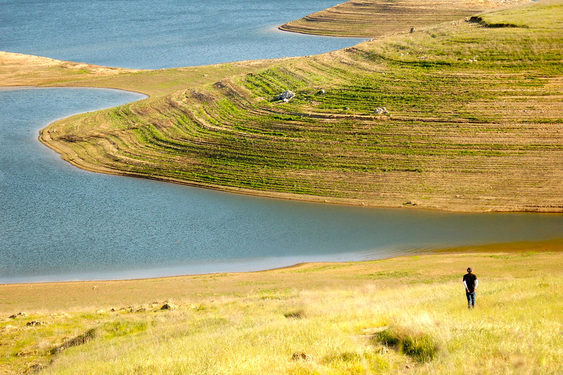

Brazilian Jiu Jitsu

I started Brazilian Jiu Jitsu just over a year ago. The majority of my waking hours I'm siting down in the office
and I knew I needed something that would put my body to work. Brazilian Jiu Jitsu has been one of the most challenging experiences
but also one of the most rewarding. I learned that human body can be quite resilient.
Photography

Photography is one of my many hobbies I enjoy. It allows me to capture a moment
and present in a unique way. I like to capture memories of different experiences like when I travel to far places or when I get together with
friends and family. Photography isn't just for the Instagram likes, I thoroughly enjoy the whole process of taking a photo and editing a photo.